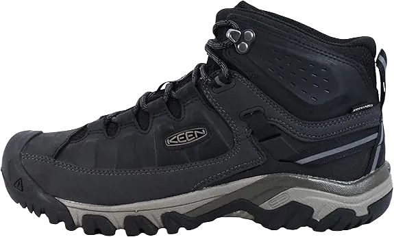

11 Best Waterproof Walking Shoes for Europe 2024
For those who love spending time outdoors, nature can be as gentle as a lamb or as wild as a lion. Even two pairs of waterproof shoes can quickly get damaged in heavy rain. If you're a fan of outdoor adventures, you need shoes that can withstand those days when the weather isn't ideal. When the sun refuses to shine and rain keeps falling, you need shoes that will keep your feet dry and prevent slipping on wet surfaces.
This article highlights various styles, featuring some of the best waterproof shoes from well-known brands such as Merrell, New Balance, Clarks, and Rockport. These shoes not only protect your feet from harsh weather but also provide excellent support and comfort. These products are globally recognized for their cutting-edge technology in offering support without compromising on style and fashion.
-
#1
Targhee III Men’s Sharpen Shield
The Keen Targhee III waterproof shoe is a top contender among the most popular waterproof men’s shoes. Renowned for its versatility and availability in a range of sizes, this durable and lightweight boot offers exceptional lower leg support. Its standout feature is its low-profile design, crafted from waterproof nubuck leather, ensuring that your feet stay dry even in wet conditions.
The shoe also boasts a rubber sole that provides excellent cushioning and comfort while walking. The breathable tongue stretches from the toe to the front, helping to wick away moisture from inside the shoe. Additionally, the shoe resists odors, so even after long wear and sweat, it won’t retain unpleasant smells.
One of the best features is the simple lacing system, which keeps your feet securely in place. The outsole features a grippy tread, reducing the risk of slipping in wet environments. Lightweight and designed to mold to your feet, the Targhee III reduces strain while enhancing comfort. This shoe runs slightly small, so consider sizing up when ordering. -
#2
Dunham Men’s Cloud Mid-Cut
New Balance is synonymous with sports, but you don’t need to be an athlete to enjoy their waterproof shoes. The Dunham Cloud Men’s New Balance hiking shoe is designed with waterproofing that ensures your feet remain dry, even on the wettest days. Keeping your feet dry is just the beginning—these shoes also feature a built-in EVA foam footbed with cushioning that offers firm support, reducing the impact of every step.
The lightweight and flexible sole make it feel as if you’re walking on sunshine. The EVA insert adds extra durability, ensuring these shoes last through many adventures. Additionally, they feature a fiberglass stability shank that’s integrated into the sole, providing arch support and ensuring a smooth walking experience, especially for those with flat feet.
The durable rubber outsole offers excellent traction, giving you confidence with each step. These waterproof shoes are not only functional, offering protection and comfort, but they also stand out in style. Perfect for casual wear or for tackling challenging terrain and hiking trails. -
#3
Marshes Men’s Urban Walker
If you’re a man in search of comfortable waterproof running shoes, the Bogs Men’s Urban Walker should be on your list. These shoes are 100% waterproof and built to handle even the toughest outdoor activities. Not only will they keep your feet dry in any situation, but they also provide ample room for your toes and extra cushioning around sensitive areas like your pressure points.
The shoes feature a wide toe box, low heel, and a four-way stretch bootie for maximum comfort and flexibility. The innovative Neo-Tech design offers the space you need to move freely while keeping your feet secure.
With Bogs’ Urban Walker waterproof shoes, you’ll stay warm and comfortable even in the chilliest conditions, as they are insulated to withstand temperatures as low as -20°F. Plus, there's no need to worry about laces with this easy-to-wear design. -
#4
Rockport Men’s Storm Surge Sneaker
.webp)
The Rockaker Men’s Waterproof Blucher Storm tennis shoe perfectly showcases what Rockport has to offer and what loyal customers expect. These waterproof running shoes combine comfort with modern technology, and they come in a variety of styles to suit different preferences. The standout feature is the Hydro-Shield technology.
ADIPRENE technology provides top-notch shock absorption, while the EVA footbed helps align your feet properly for optimal comfort. Additionally, the shoes are equipped with a padded collar and smooth tongue to prevent blisters. When facing harsh weather or navigating unfamiliar terrain, you’ll appreciate the slip-resistant soles and the protective support these shoes offer.
With an incredibly durable rubber outsole, Rockport delivers the traction and stability you need. These waterproof running shoes are available in three stylish colors: beige suede, koa, and charcoal, offering both functionality and fashion. -
#5
Merrell Men’s Jungle Moc Slip-On
.webp)
Merrell didn’t want the ladies to have all the fun, so they created the Jungle Moc for men too. These waterproof shoes are incredibly comfortable and are made with pigskin, which also plays a role in the breathable membrane. This waterproof layer not only keeps water out but also allows moisture to escape when your feet sweat, keeping them dry and comfortable. The FIT Eco option selected by owners features a snug footbed that molds to your feet for a perfect fit.
The technology in these shoes also helps control odor, ensuring freshness throughout the day. The walking shoes come with a supportive footbed that provides extra stability and a molded nylon arch shank for added strength. The Jungle Moc heel is sealed, providing extra support and shock absorption for a smooth and stable walking experience.
The outsole is both durable and sturdy, allowing you to walk confidently on dry or wet surfaces without the worry of slipping. With all these impressive features, these men’s waterproof shoes come in two sleek colors: black and gun smoke, combining style with functionality. -
#6
Sharp Men’s Austin WP Outdoor
These KEEN men’s waterproof outdoor shoes are built to withstand harsh weather conditions. They feature KEEN.DRY waterproof technology, along with a waterproof mesh upper and lining that ensures your feet stay dry. Inside, the shoes have an EVA footbed designed to offer excellent arch support, conforming to the natural contours of your feet for optimal comfort.
Designed as walking shoes, they offer extra room in the toe area for added comfort. The outsole features a lug pattern and signature grip, making these shoes ideal for walking in various weather conditions. Whether on wet or dry ground, these shoes provide the traction and support you need for any adventure.
Another comfort-enhancing feature is the lace-up design, allowing you to adjust the fit to your liking. Available in four different colors, KEEN blends luxury, functionality, durability, and style with these men’s waterproof shoes, making them perfect for any outdoor enthusiast. -
#7
Colombian Waterproof Shield
If you love the outdoors but hate having wet feet, the Crestwood Waterproof Columbia Men’s shoe is exactly what you need. These waterproof shoes are crafted from a combination of durable leather and breathable mesh, designed to keep water and snow out while providing your feet with the comfort and support they require.
This innovative feature provides a lightweight midsole, so you won’t feel weighed down while walking in these waterproof shoes. The technology also enhances cushioning and comfort, making them ideal for navigating challenging terrain where the benefits of these features really stand out.
With the Crestwood shoes, you can customize your comfort thanks to the removable insole. The outsole is equipped with Omni-Grip technology, ensuring a superior grip and high traction on various surfaces. The Columbia Crestwood shoes are available in two colors: black and camo, blending style with function for any outdoor adventure. -
#8
Sharp Women’s Targhee III WP Water Shield
Among the shoes in this list, the Women’s Targhee III stands out as one of the best and most accessible running shoes, comparable to options like the Salomon Quest 4D 2 and the Teva Montara Boot. From the moment you slip them on, they feel amazing on your feet, offering comfort right away.
This shoe is roomier than many others on this list, which is a great advantage for those with wider feet. The wide toe box also reduces break-in time, allowing you to experience enhanced comfort much sooner.
Despite its rugged design, the Targhee III is lightweight, weighing just seven ounces per shoe. They offer all-day comfort without feeling heavy, so you won’t feel the need to take them off after a long day of walking. When purchasing, make sure to go up by half a size for the best fit. -
#9
Ahnu Women’s Sugarpine II Waterproof Shield

Walk or hike with confidence in the Ahnu Sugarpine 2 waterproof light shoes. These shoes are packed with features that ensure your walks or climbs will be successful. Constructed from durable grain-finished leather, they also have an EVA midsole that offers excellent cushioning and support. The Sugarpine shoe includes a removable footbed that enhances support for your heels and arches, providing an extra layer of comfort.
These waterproof women’s shoes also feature a treated antimicrobial insole that helps minimize odor-causing bacteria, ensuring your feet stay fresh.
The shoe’s forefoot includes a protective plate that shields your feet from sharp rocks, while the tongue is designed to keep dirt and debris out. For those long hikes or climbs, it’s essential to have shoes that provide excellent traction, and these are equipped with Vibram outsoles that perform well on both wet and dry surfaces. With the Ahnu Sugarpine waterproof shoes, you’ll enjoy comfort, support, and a choice of four attractive colors: new black, black, bluestar, and moss. -
#10
Sharp Women’s Presidio Sport Mesh
Active women will truly appreciate the impressive features of the KEEN Presidio waterproof shoe. These hiking boots are equipped with KEEN.DRY technology, which combines waterproof leather with a breathable mesh upper. The waterproof leather keeps your feet dry in rainy conditions, while the high-top design helps prevent water from entering.
Additional features include a Purseport NXT insole for odor control and an EVA midsole for cushioning. The shoe is designed for comfort, providing support from the heel all the way to the toes. The mesh lining and removable footbed enhance comfort further, with the footbed specifically designed to support your arch while conforming to the natural shape of your feet.
The durable and flexible outsole provides excellent traction for all your outdoor adventures. KEEN hiking boots are versatile enough for various weather conditions, whether you're on your feet all day or looking for a spacious toe box. Not only are they functional, but they also come in two stylish colors: black and edible olive. If you’re looking for a lightweight shoe that can stand up to the elements, the KEEN waterproof shoe is the perfect choice. -
#11
Taraval women’s running shoe Ahnu
The Ahnu Tavala is a waterproof, slip-resistant shoe that combines high functionality with style. Made from waterproof nubuck leather and accented with leather trim, this shoe is designed for durability and long-lasting wear. Once you slip into these waterproof oxfords, you'll immediately feel the comfort provided by the cushioned polyurethane footbed. Additionally, the breathable mesh lining helps manage moisture effectively.
You won't have to sacrifice style for practicality with these waterproof shoes. They feature a nylon shank that enhances torsional flexibility while providing arch support for medium-height feet. This thoughtful design ensures you can move comfortably and confidently throughout your day.
Available in six attractive colors—including black, playful purple, guardian, charcoal, sea blue, and harvested harbor—these shoes are as versatile as they are stylish. Whether you're out for a casual stroll or tackling more adventurous terrain, the Ahnu Tavala offers the perfect blend of comfort, support, and aesthetic appeal.